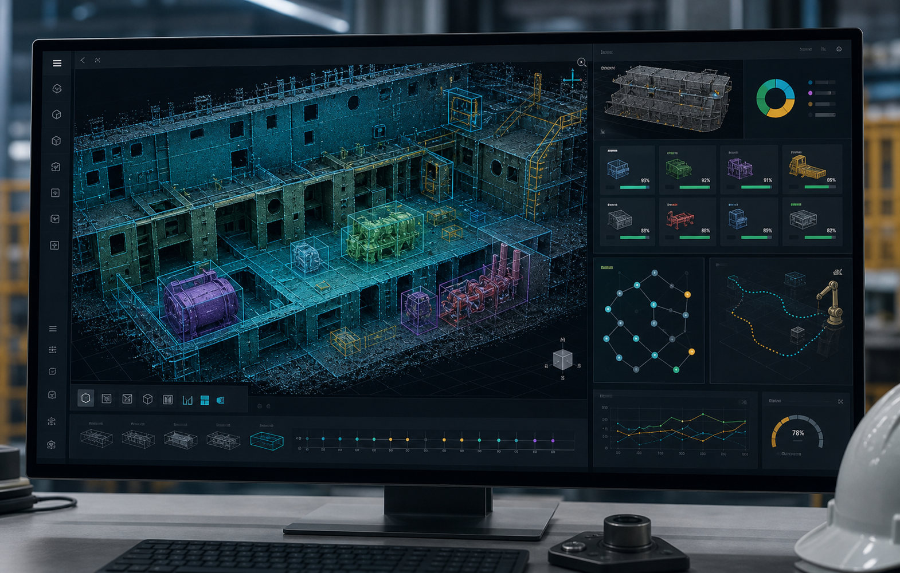
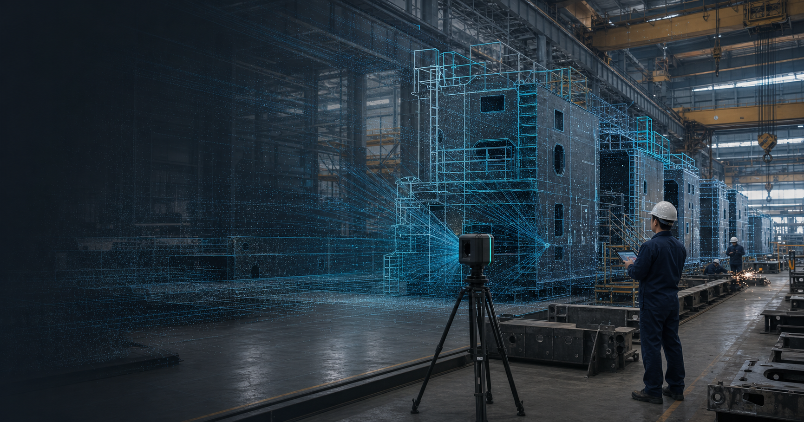
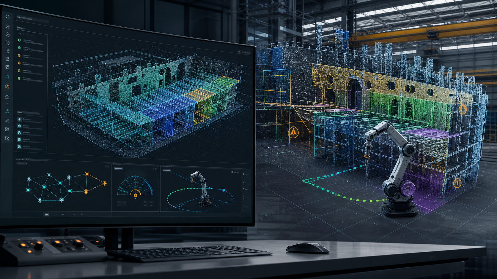

Field Data Capture
Point clouds, CAD, photos, inspection criteria, and workspace constraints are organized by project.
Connecting 3D scan data to field decisions and execution data
Optimize3D is a field-focused 3D point-cloud data company that connects spaces in shipbuilding, offshore, manufacturing, and construction sites to AI analysis, quality decisions, reverse engineering, and robotics.
Manufacturing Data Stack
Point clouds, CAD, photos, inspection criteria, and workspace constraints are organized by project.
Segmentation, feature extraction, deviation candidates, collision risks, and accessibility are computed as usable data.
Results are delivered as inspection reports, CAD reconstruction, jig concepts, and robot simulation inputs.
Business Area
Before adopting a large commercial package, teams can validate inspection feasibility, automation potential, and fabrication support through a focused pilot.
Target scanning, registration, reference coordinates, CAD comparison, deviation maps, and inspection item definition.
Scan-based CAD reconstruction for parts, molds, and structures with insufficient drawings.
Point-cloud segmentation, 3D object recognition, defect candidate detection, and spatial relationship reasoning.
Deviation, GD&T, before-and-after welding deformation, and decision evidence organized into reports.
3D printed jigs, fixtures, and prototype parts for inspection, assembly, and temporary positioning.
Point-cloud workspaces converted into robot path, collision review, and digital twin input data.

Spatial AI Engine
Ship structures, pipes, jigs, and workspaces are separated in point clouds, then analyzed for object relationships, accessibility, collision risk, and inspection priority.
Operating Model
Rather than selling scanner output alone, Optimize3D defines reference coordinates, tolerances, deviation maps, AI findings, report formats, and fabrication or robot input data that field teams can review.
Point clouds, CAD, photos, criteria, and site constraints are collected.
Coordinate systems, reference geometry, tolerances, and decision items are defined.
Deviation maps, features, object segmentation, spatial reasoning, and report formats are validated.
Inspection reports, CAD reconstruction, jig concepts, and robot simulation data are delivered.
Productized Pilot
Optimize3D packages equipment operation, point-cloud processing, reference alignment, decision logic, reports, fabrication data, and robot input data into one project scope.
Applications

Targets, equipment, registration method, and quality criteria are validated against real site conditions.
Structures and parts are segmented from point clouds to organize defect candidates, deviation, and inspection priority.

Object relationships and collision risks in the workspace become robot simulation input data.
Technical Backbone
Optimize3D uses the research base of the Optimized Ship Production Technology Laboratory at Mokpo National Maritime University in 3D scanning, quality control, reverse engineering, machine learning, additive manufacturing, and collaborative robotics.
Contact
A point cloud, CAD file, photo set, inspection criterion, or field issue is enough to define a pilot scope.